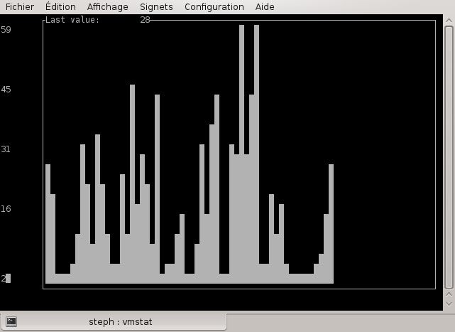

Small Python script to draw barcharts in terminal
This project is maintained by stephane-deraco
Termchart is a simple Python script that takes data from standard input, and draws a barchart on the terminal using ncurses.
All you need is the termchart.py file. You can grab it using wget or
cURL:
wget https://raw.githubusercontent.com/stephane-deraco/Termchart/master/termchart/termchart.py
Don't forget to do chmod +x termchart.py after.
The requirements are:
/dev/tty)Note: this script has not been tested with Python 3.
termchart.py [--no-keep]
The script wait for data coming from standard input. It can be passed using pipes, like cat data.txt |
termchart.py
The script must receive data consisting of numbers, with only one number per line. Everything else will be ignored.
Each time the script receives data, it displays a bar on the terminal with a height relative to the value received. The Y scale is automatically adjusted. If there are more data to display than the width of the terminal, then the data received first is discarded (like a FIFO).
Regarding the --no-keep option, we must consider two cases:
cat datat.txt | termchart.py)
--no-keep option, the program will exit immediately after the end of the stream, and
will clear the screen ; so you will not see anything, this option is not useful in
that case
CTRL-C will exit the
program
--no-keep option, the program will exit immediately after pressing CTRL-Cvmstat 1 | awk '{print $13; fflush(stdout)}' | termchart.pyfflush(stdout) in awk to force it to flush immediately.

ping www.google.fr | awk 'BEGIN {FS="[=]|[ ]"} NR > 1 {print $11; fflush(stdout)}' | termchart.pyjstat -gc <vmid> 1000 | awk 'NR > 1 { gsub(",", ".", $6); print $6; fflush(stdout); }' | termchart.py